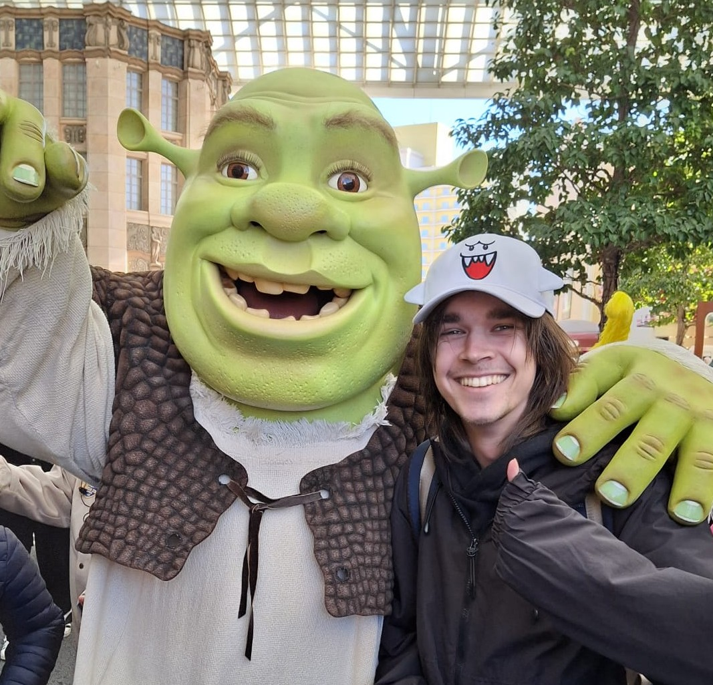
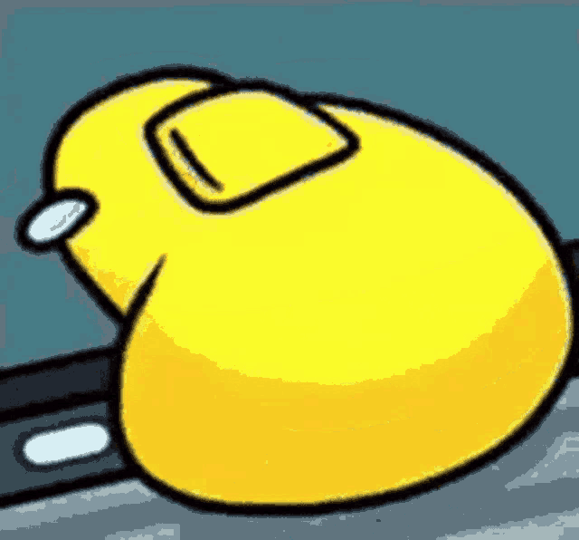

| Prior Knowledge | Aside from having read books in the past, and having written stories myself, I have no significant prior knowledge |
| Expectations | I expect to learn a great deal, to see and experience manuscripts first-hand, and as a result, learn more about how texts have played a part in society through different time periods |
